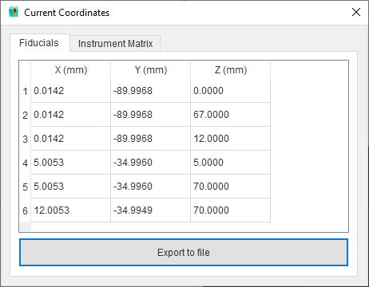
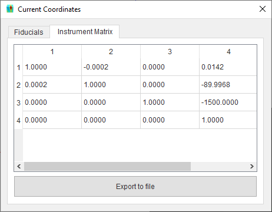
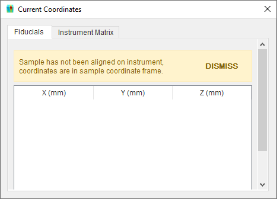

Insert Fiducial Points
Fiducial points are used in SScanSS to determine the position and orientation of a sample after it has been moved to instrument. The fiducial points will be rendered as spheres in the graphics window.
Loading fiducial points from file
To import a :ref:`fiducial file`, Go to Insert > Fiducial Points > File..., browse to the location of the file and select it.
Note
Imported points will not replace existing points but will be appended to them. Delete old points from point manager if necessary.
Key-in fiducial points
Click Insert > Fiducial Points > Key-In and type in the X, Y, and Z values of the fiducial points and click Add Fiducial Point button. The fiducial point should be displayed in the graphics window

Manage fiducial points
Fiducial points can be viewed and managed via the point manager. The point manager will be opened when fiducial points are added, if the point manager is closed it can be opened by selecting View > Other Windows > Fiducial Points in the menu. Points can be edited, re-ordered, deleted, enabled or disabled from the manager, and these operation can be undone (Ctrl+Z) if needed. The point manager displays the X, Y, Z coordinate of the point and the enabled status in a table. Selecting a point from the manager will cause the corresponding 3D model to be highlighted in the graphics window, this can be useful when attempting to identify specific points.

Edit fiducial points
Double click a table cell, type in the new value and press the Enter key to accept the change.
Re-order measurement points
Select a row and move the row by clicking the  and
and  buttons.
buttons.
Delete measurement points
Select one or more rows and click the  button. Multiple rows can be selected using Shift + Left Mouse Click or
Ctrl + Left Mouse Click.
button. Multiple rows can be selected using Shift + Left Mouse Click or
Ctrl + Left Mouse Click.
Enable/Disable fiducial points
Click the check box in the fourth column of the desired point to enable or disable it. Click the check box in the fourth column header to enable or disable all points.
Export fiducial points
The fiducial points can be exported from project file to a :ref:`fiducial file`. Click File > Export... > Fiducial Points in the main menu, navigate to the desired save location in the file dialog, enter a name for the file and press the Save button.
View fiducial coordinates in instrument frame
The fiducial point coordinates can be viewed in the instrument frame by clicking the Current fiducial coordinates icon in the toolbar. This shows a dialog with the fiducial coordinates a separate tab shows the current instrument transformation matrix.
 or 
If the sample is not aligned on the instrument then the fiducials will be displayed in their original coordinate frame and a warning will be displayed.
